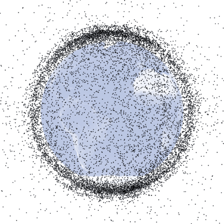

После стольких восторженных откликов не мог не сходить на «Гравитацию». Понравилось.
Баттхерт, который вызвал фильм у настоящих космонавтов (а у нас все, как известно, космонавты, футболисты и политики) забавен. Создателей фильма обвиняют в том, что события НЕПРАВДОПОДОБНЫ. Странно, но ни разу не читал таких отзывов о «Аватаре».
Синдром Кесслера — гипотетическое развитие событий на околоземной орбите, когда космический мусор, приводит к полной непригодности ближнего космоса 
У меня претензия одна, — к российским прокатчикам. Очевидно, что оригинальное название фильма «Gravity» переведено как «Гравитация» ошибочно.
В русском языке у слова «гравитация» устоялся совершенно определённый смысл — физический термин, означающий земное притяжение.
Вот только никакого земного притяжения в фильма нет. (Абстрагируйтесь от того, что действие фильма происходит в космосе, космос здесь просто декорации для спецэффектов). В фильме речь не о гравитации, а о другом варианте перевода слова «Gravity» — тяготении. Причём в обоих смыслах этого слова. Это и тяготение главной героини прошлым и тяготение её к прошлому. Жаль что фильм не назвали именно «Тяготение».